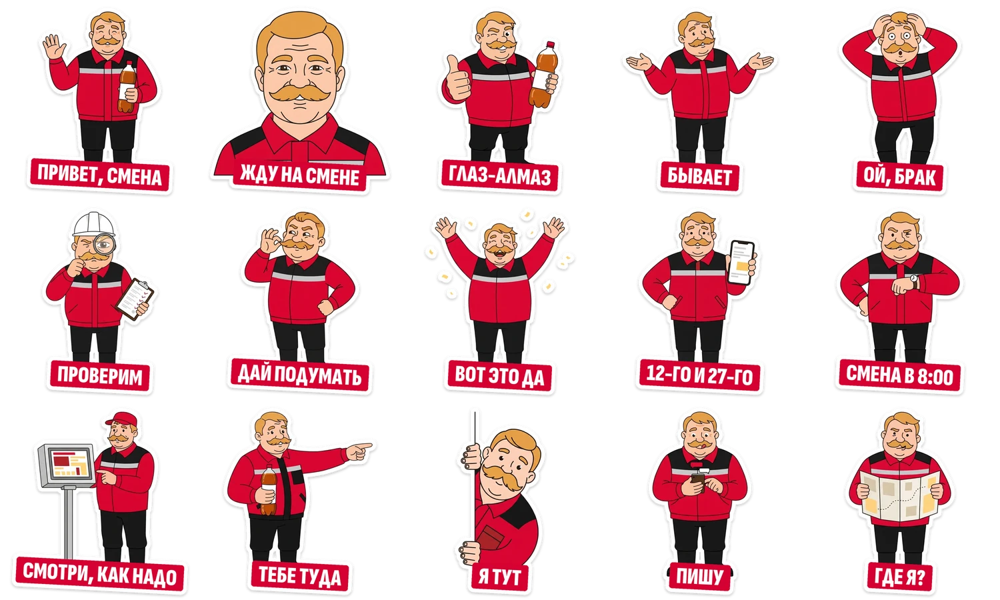

HR-бренд «Очаково» для студентов и выпускников
Квас делают люди
Как привести студентов на практику в «Очаково» и удержать их до конца сезона
группировка antihype
HR-бренд «Очаково» для студентов и выпускников
Как привести студентов на практику в «Очаково» и удержать их до конца сезона
группировка antihype
Сайт, бот в Telegram и MAX и мини-приложение работают на одном движке. Всё уже работает на antihype.best.
Сайт и игры
Заявка
После заявки
Квасыч и мессенджеры

Попробовать: antihype.best/hr, почта jury@antihype.best, пароль jury-antihype
Заявки
Найм и первые недели
Воронка и источники
Настройка и данные


Всё ведёт в одну воронку. Легенда «Квас делают люди» связывает сайт, бота, экскурсию и музей.




HR-панель: antihype.best/hr
почта jury@antihype.best
пароль jury-antihype
Квас делают люди
Спасибо
группировка antihype